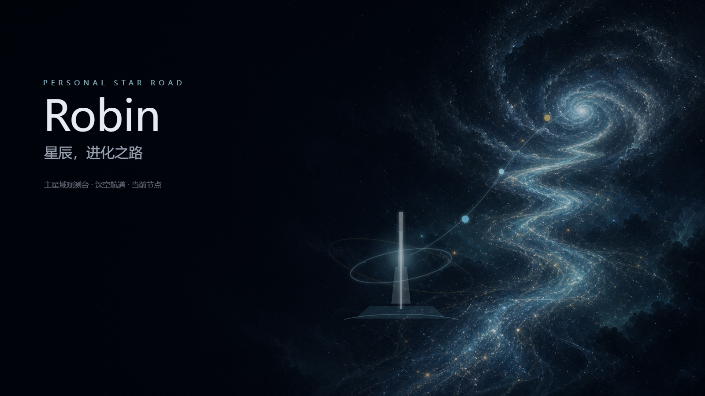
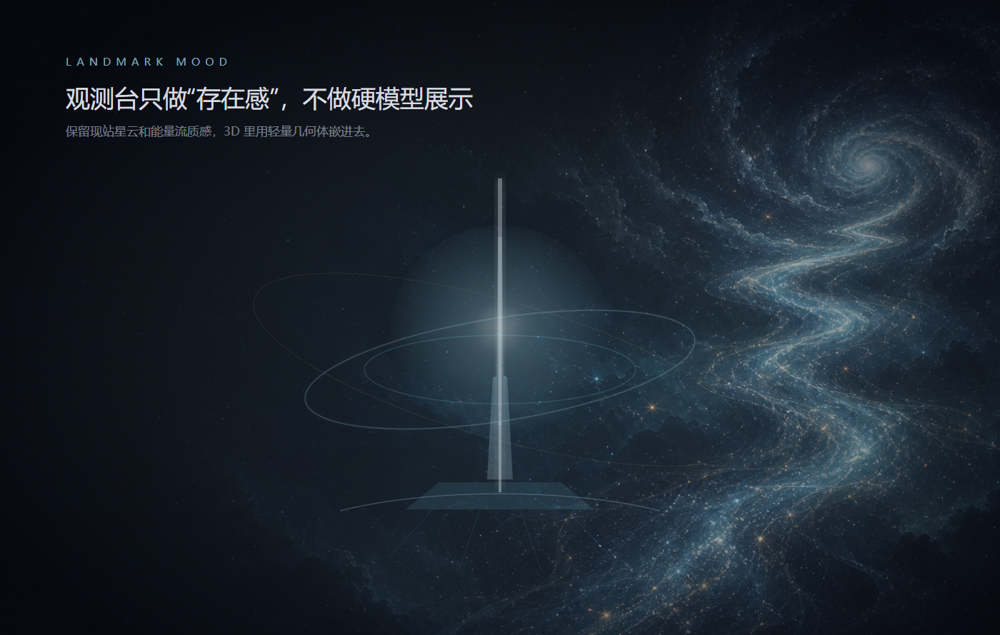
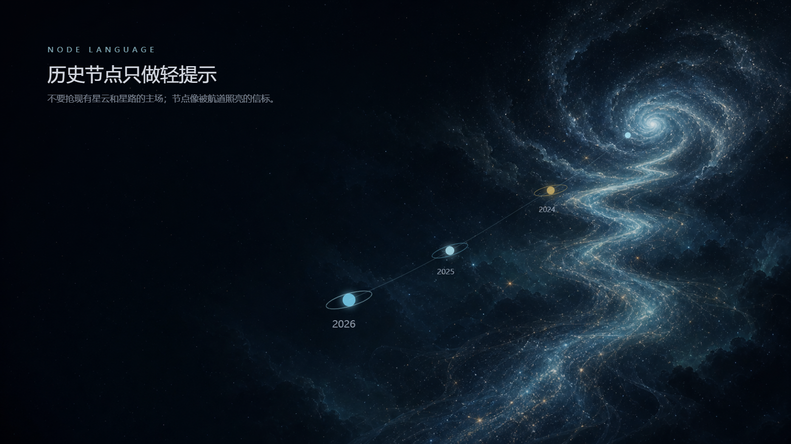

Style Review
Robin 主星域观测台 平面美术风格稿 · 现站风格版
A 方案 · 主星域观测台
这组素材改为贴合当前网站：沿用现有深空星云、星尘和能量流，只补充克制的观测台、节点和航道提示。确认后再把它们拆成 Three.js 几何体、材质、粒子和镜头动线。

主视觉：主星域观测台
第一屏构图
品牌锚点
右侧主星域
验证首页第一眼是否仍然属于当前网站：保留现有星云和星路，只让观测台作为近景入口出现。

地标：观测台存在感
细塔
光柱
双层能量环
验证观测台不要抢画面：它只提供当前节点的“存在感”，3D 里用轻量几何体嵌入星云。

路径：轻量历史节点
时间方向
历史节点
远近层次
验证节点不要像 UI 标记贴上去，而要像被星路照亮的信标，弱标签、弱轮廓、保留现有空间质感。